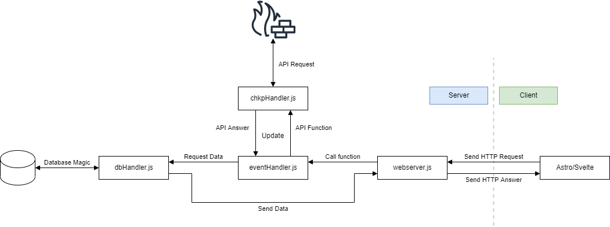
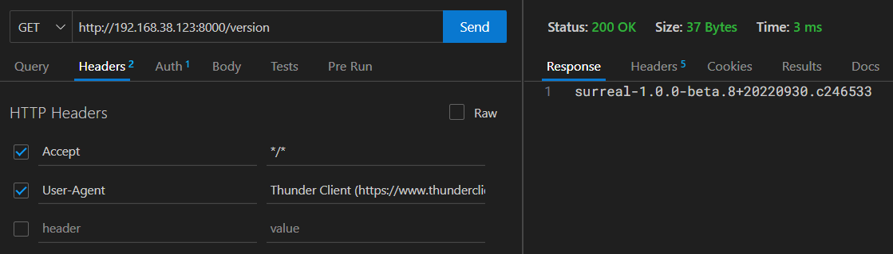
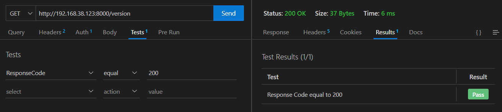

{kind=link}
Database
Note
Given the nature of SurrealDB’s development this page is subject to frequent change
SurrealDB
“With an SQL-style query language, real-time queries with highly-efficient related data retrieval, advanced security permissions for multi-tenant access, and support for performant analytical workloads, SurrealDB is the next generation serverless database.”

SurrealDB is far from being complete. Yet, it offers functions, methods and workflows that are not provided by a single other database.
Setup
Starting SurrealDB can be done in a single line:
curl --proto '=https' --tlsv1.2 -sSf https://install.surrealdb.com | sh -s -- --nightly
Alteratively, SurrealDB can be started using Docker
docker run --rm --pull always -p 8000:8000 surrealdb/surrealdb:nightly start
Running in memory
Starting SurrealDB like above, the database is run in memory and does not take up any storage. This is perfect for testing purposes. Of course, normal usage of the database is also possible.
Schemaless
SurrealDB can receive schemaless Data. This means that queries do not have to conform to table designs.
Deno Webserver
{kind=link}
The build in Deno webserver acts as proxy to the SurrealDB database. This allows configurations not yet implemented in SurrealDB like HTTPS and more complex authentication. Overall, database interactions still stay simple and we do not lose any functionality.
The Deno Webserver is startet using the webserver.js file. This file covers both webserver configuration (Port, …) and accepted paths and their corresponding functions. These functions are imported from the handler.js https://github.com/ReDeployed/core/blob/master/surreal-src/server/handler.js file. They are responsible for the database interaction and returns either the error code or the newly set data if the interaction completed without errors.
Starting the Webserver
As mentioned above, starting the webserver is covered by the webserver.js file like this:
deno run --allow-net --allow-read webserver.ts
HTTPS
Using https with Deno is possible using a self signed certificate. We did implemented this, but soon noticed that it creates more complications for what it is worth, especially when using a https proxy.
Sending HTTP requests
This is covered by the client.
Receiving HTTP requests The webserver.js file then receives these requests. Based on the path, the webserver runs database-handler functions imported from the handler.js https://github.com/ReDeployed/core/blob/master/surreal-src/server/handler.js file.
try {
const url = new URL(requestEvent.request.url);
let response;
switch (url.pathname) {
case "/ping":
response = {message: await db.ping()};
break;
...
}
}
async ping() {
console.log(`${file}> ping`); // Logging
try{
let db = new Surreal('http://127.0.0.1:8000/rpc');
await db.signin({
user: 'root',
pass: 'root',
})
await db.use('test', 'test');
db.close()
} catch(e) {
return e
}
return "pong"
}
This function, as all database functions, creates a new Database connection, signs in, uses a NS and WS and then closes the connection again.
Testing with Thunder Client
Thunder Client allows us to send http requests from VisualStudio Code. We can use this to test the our code as well as the responsiveness of our database server.
Headers, Authentication Body of the request, the type of request and the hostname/IP address of the server can easily be set on the main screen. To save time, requests can be saved to become repeatable and presets containing non-changing settings like the hostname or authentication details can be created.
{kind=link}
SurrealDB’s version can be obtained effortlessly by utilizing Thunder Client. We can also get the Status Code (200 OK), response size (37 Bytes) and the time required (3 ms)
We can even use Thunder Client for automated tests.
{kind=link}
These tests can be saved and repeated automatically as well. Setting them up requires only filling 3 fields.
Data
As mentioned above, saving data using SurrealDB is far less complex than databases. This allows us to simply put the json output from the firewall straight into the database.
return await db.addApp(
id,
ip,
await chkpSim.showDiagnosticsCPU(),
await chkpSim.showDiagnosticsMEM(),
await chkpSim.showInterfaces(),
await chkpSim.showVersion(),
);
We are unsure about showing the entire firewall configuration
Endpoints
Note
Deleting a firewall inside the firewall-manager does not delete the physical firewall
/startManage
Endpoint for adding a firewall.
.../startManage?id&ip=1.2.3.4
Parameters:
id - id of the firewall (hostname)
ip - ip address of the firewall
stopManage
Endpoint to stop managing a firewall.
Note
Deleting a firewall inside the firewall-manager does not delete the physical firewall
.../stopManage?id=CheckAPPL
Parameters:
id - id of the firewall (hostname)
update
Endpoint to refresh displayed data
.../update
Parameters:
none